Research and Analysis of Critical Factors Affecting Student Hydration
During the second phase of the project, a comprehensive analytical approach was implemented to identify and evaluate the critical factors influencing inadequate hydration among university students.
1. Identification, Prioritization and Survey Design
Working groups collaboratively identified the principal factors affecting student hydration and organized them according to importance. Based on these results, a structured survey was developed to convert opinions into measurable data for later statistical evaluation.
2. Statistical Analysis and Data Validation
The collected information was analyzed using averages, variability measures, and comparative tools to identify trends and influential factors. Validation methods were also applied to ensure consistency, reliability, and accuracy of the obtained results.
3. Hypothesis Testing
Statistical tests were conducted to determine whether selected variables had significant influence on hydration habits. The results confirmed several patterns previously detected during the descriptive analysis.
4. Final Proposal and Product Design
After evaluating the results, the team proposed the development of a thermos bottle with an integrated filter capable of removing impurities from water. The product concept was designed and modeled in Fusion as a practical solution to improve safe hydration among students.
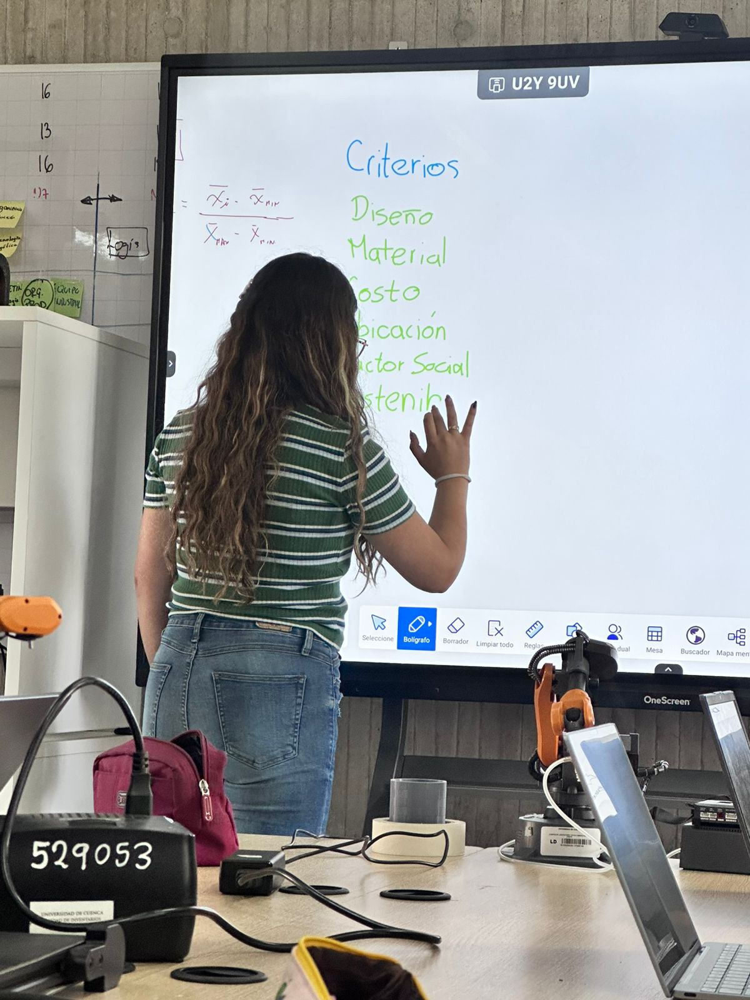
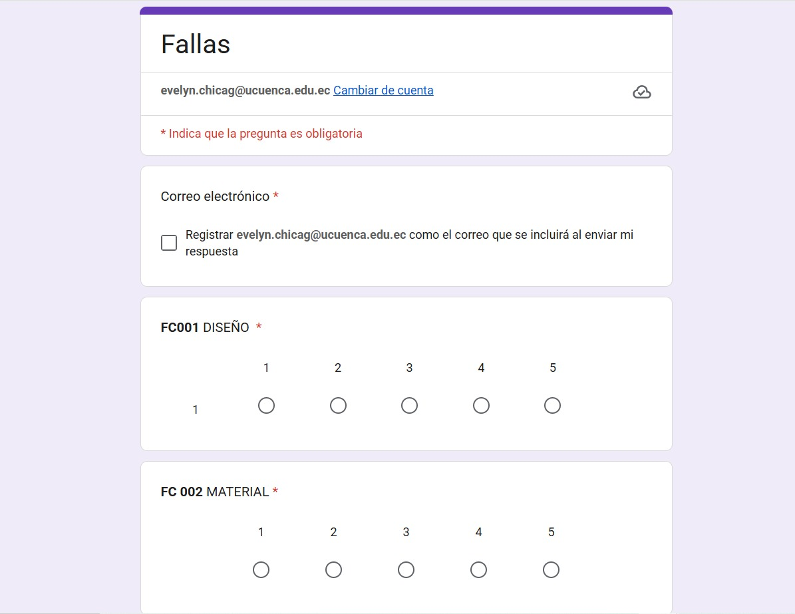
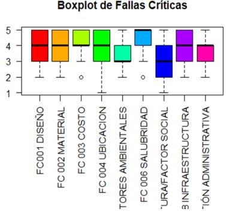
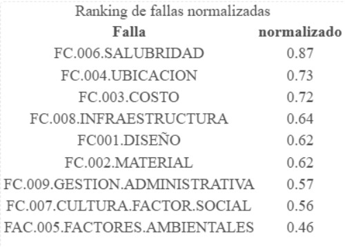
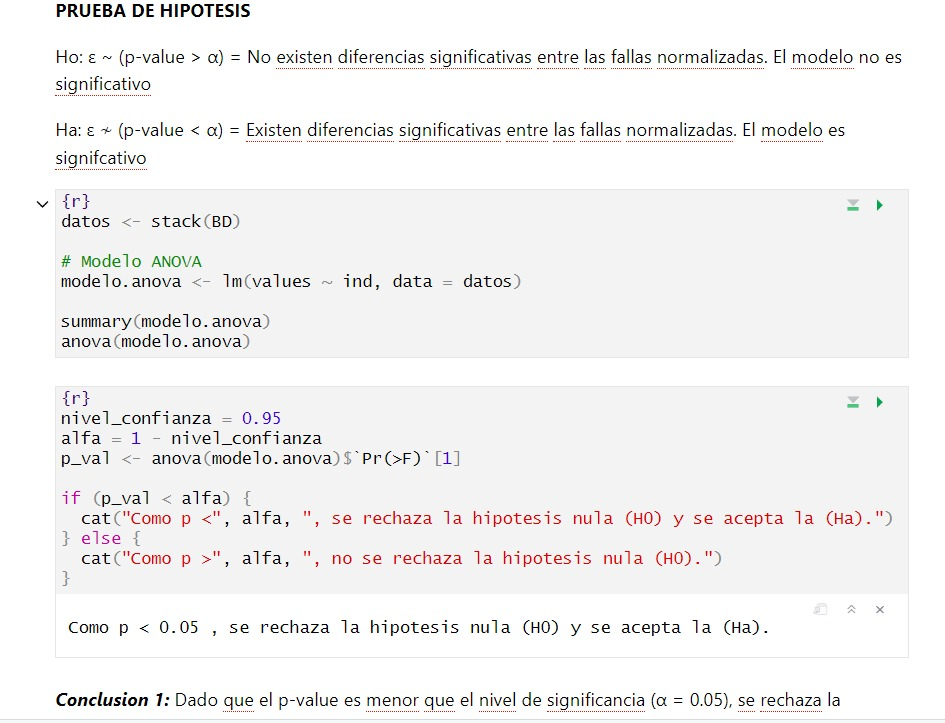
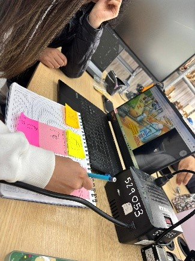

IKEA Furniture Design and Statistical Analysis
During the first stage of the project, a comprehensive statistical and market analysis was carried out following the IKEA design methodology. The objective was to identify a furniture product capable of combining functionality, easy assembly, commercial viability, and modern aesthetics while taking advantage of the digital fabrication tools available at the FabLab laboratory of the University of Cuenca.
Through consumer studies, market research, and statistical analysis, different furniture categories were evaluated in order to determine the most suitable product for development. This process allowed the team to understand consumer needs, transportation difficulties, usability preferences, and design expectations before starting the digital modeling and manufacturing stages.
Project Objectives
The main objective of the project was to design a piece of furniture inspired by the IKEA methodology, emphasizing easy assembly, functionality, and efficient manufacturing processes using FabLab technologies.
In addition, the project aimed to analyze consumer preferences through statistical methods in order to support the product selection process with real data and measurable results. The study also sought to strengthen practical knowledge in digital fabrication, product development, and collaborative design methodologies.
Macro Analysis
A large-scale market study was conducted to evaluate current furniture trends and identify the categories with the greatest commercial potential. Different types of furniture products were analyzed according to popularity, production feasibility, consumer demand, and cost-performance relationship.
The obtained results indicated that desks and tables represent the most viable products for manufacturing due to their high commercialization rate and their stable balance between production cost and consumer demand. These categories also showed strong adaptability to the IKEA philosophy of modularity and easy transportation.
Statistical comparisons and graphical analyses were used to evaluate the most requested categories, the most popular products, and the relationship between manufacturing cost and product consumption.
Micro Analysis
A segmented consumer analysis was developed to better understand the preferences and expectations of the target audience. Surveys and statistical evaluations focused on furniture usability, transportation convenience, assembly interest, and product functionality.
The analysis demonstrated that an IKEA-inspired furniture design would have strong acceptance due to its modern appearance, practical transportation, and accessible assembly process. The results also confirmed that the product should be oriented toward desk functionality while maintaining a reduced number of components to improve user experience and simplify assembly.
Additional survey questions explored what users value most in furniture, whether they experience transportation difficulties, what furniture categories attract the most interest, and how many assembly pieces are considered acceptable for daily use products.
Product Development
Design, Parametrization and Digital Fabrication Process
During this stage of the project, the product development process focused on conceptual sketches, structural optimization, kerf parametrization, digital modeling, laser cutting preparation, and assembly strategies. The objective was to transform the previous market and statistical analysis into a functional furniture prototype adapted to digital fabrication technologies.
1. Sketches
Based on the previous analysis, different conceptual sketches were proposed considering ergonomics, usability, and customer preferences. The project initially focused on creating a chair integrated with a desk structure capable of providing functionality and comfort for students.
Initially, the proposal included a storage drawer beneath the seat. However, after evaluating structural stability and support resistance, the drawer was relocated to the desk section, resulting in a design more similar to a modular student desk.
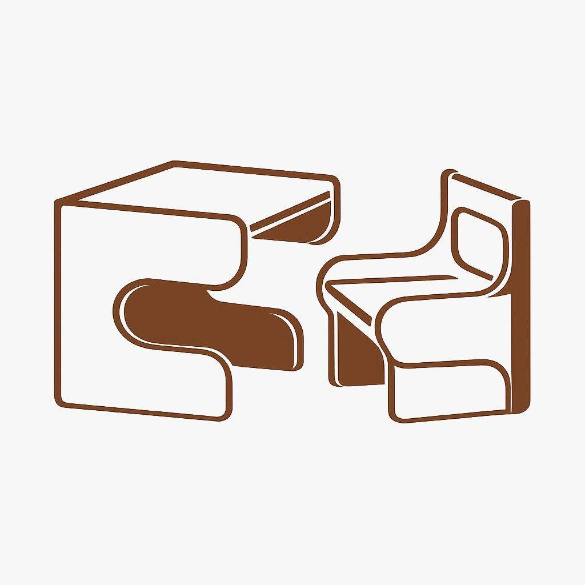
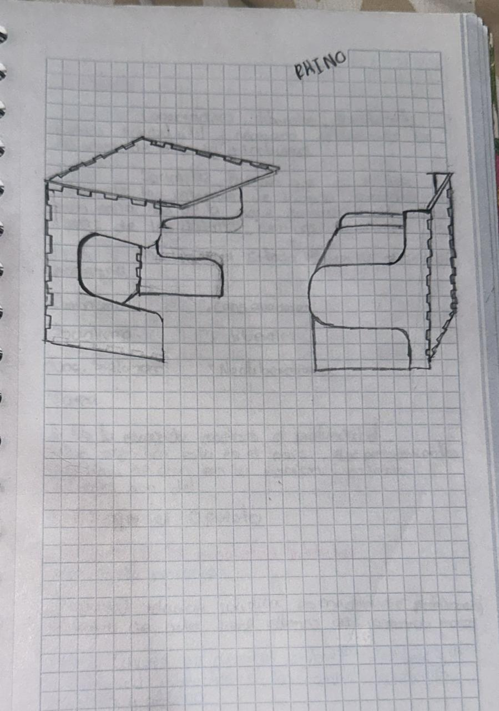
2. Kerf, Parametrization and Digital Design
The furniture structure required parametrization of joints and assembly tabs to generate pressure fitting between the different pieces. This process was essential to ensure structural stability without requiring additional fastening elements.
The design considered an approximate material thickness of 2.78 mm to compensate for the kerf generated by the laser cutting machine. The spacing between components had to be carefully dimensioned because laser speed and power directly influence precision and material burning.
The complete furniture model was developed in Fusion 360 and later exported to AutoCAD for vectorization in DXF format. Since the structure was assembly-based, several components were duplicated in pairs to create the chair supports, desk surfaces, and storage sections.
3. Laser Cutting Process
The project files were exported to RDWorks software in order to prepare the design for laser cutting. Different parameters such as power, speed, and cutting precision were verified to ensure that the final finish of the pieces achieved the desired quality.
Additional precautions were also taken before the cutting process, including performing a trajectory simulation to verify that the dimensions of the wooden sheet were correct and properly positioned on the laser cutting bed.
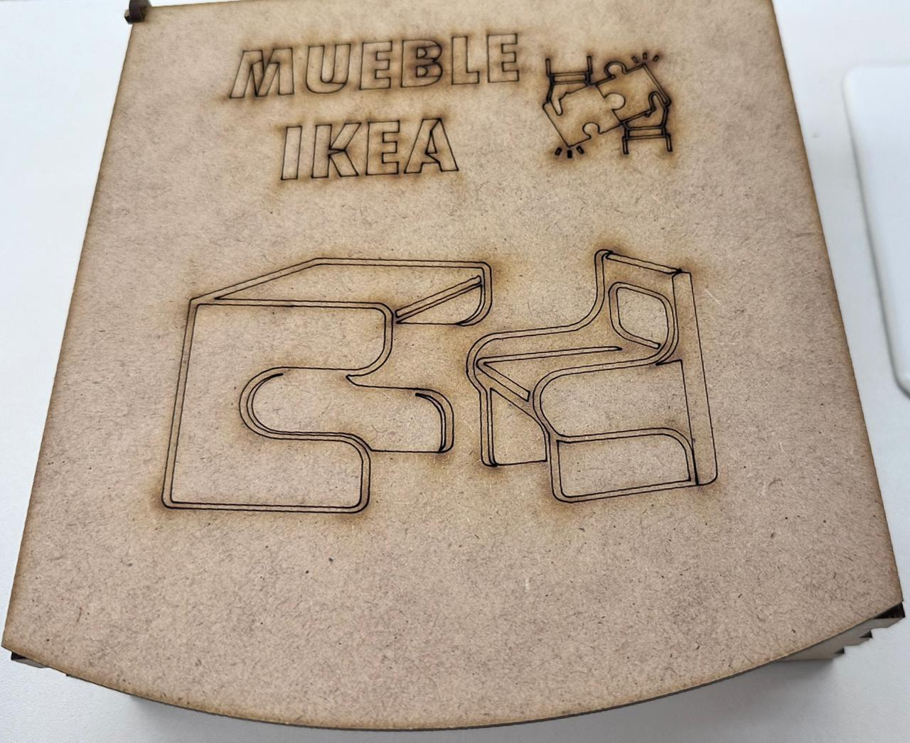
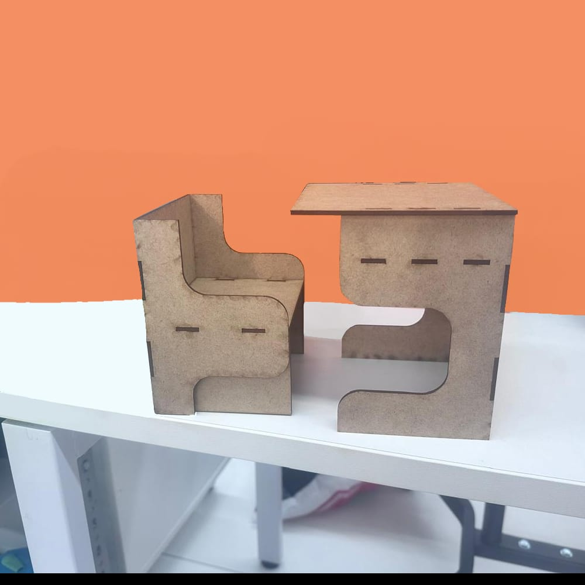
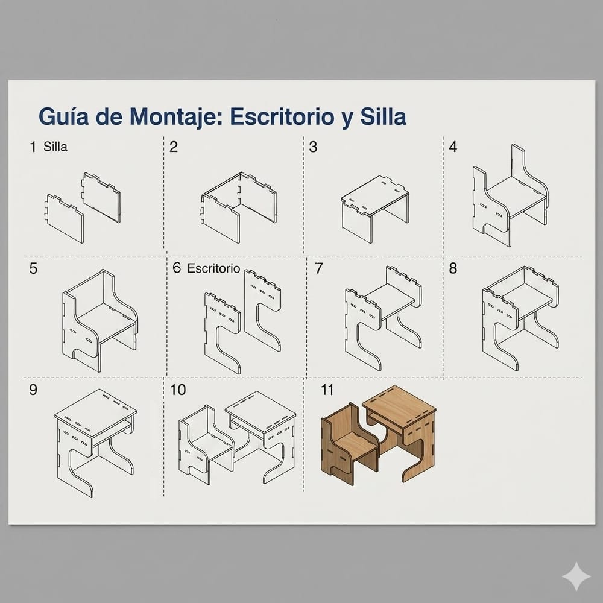
4. Assembly and Assembly Guide
After the cutting process, all the pieces were organized and classified for their subsequent assembly. The process included assembling the storage box, the desk structure, and the chair components.
Since several parts were identical, an assembly guide was designed to simplify the process for the user. The guide incorporated numbered steps and graphical references to provide a clear and intuitive assembly experience.
The main objective of the guide was to improve the customer experience by reducing confusion during the assembly process while maintaining the modular philosophy inspired by IKEA furniture systems.
Interactive Butterfly Electronic System
Concept Design, Digital Modeling and Simulation
During this week, we started the development of an electronic project based on Arduino technology. The professor introduced the project requirements and presented the software tools that would be used throughout the development process, including KiCad, Wokwi, and Arduino IDE. After reviewing the project objectives, our team decided to create a butterfly-shaped design that combines creativity, digital fabrication, and electronics.
1. Project Introduction and Software Tools
The project began with an explanation of the objectives and requirements of the Assignment. During the class, the professor introduced the software tools that would be used during the development process.
KiCad was presented for electronic circuit and PCB design, Wokwi for virtual simulation and testing, and Arduino IDE for programming and uploading code to the Arduino board.
After understanding the project requirements, we purchased the necessary materials, including an Arduino board, LEDs, resistors, wires, and a copper board that would later be used for manufacturing the electronic circuit.
2. Sketches and Design Selection
After reviewing the project requirements, several sketches were developed to define the appearance and structure of the electronic system.
Instead of reproducing the original example, our team decided to create a butterfly-shaped design. Different alternatives were evaluated before selecting the final geometry and component distribution.
The sketches helped define the location of the LEDs, the dimensions of the wings, and the general appearance of the project before moving to the digital design stage.
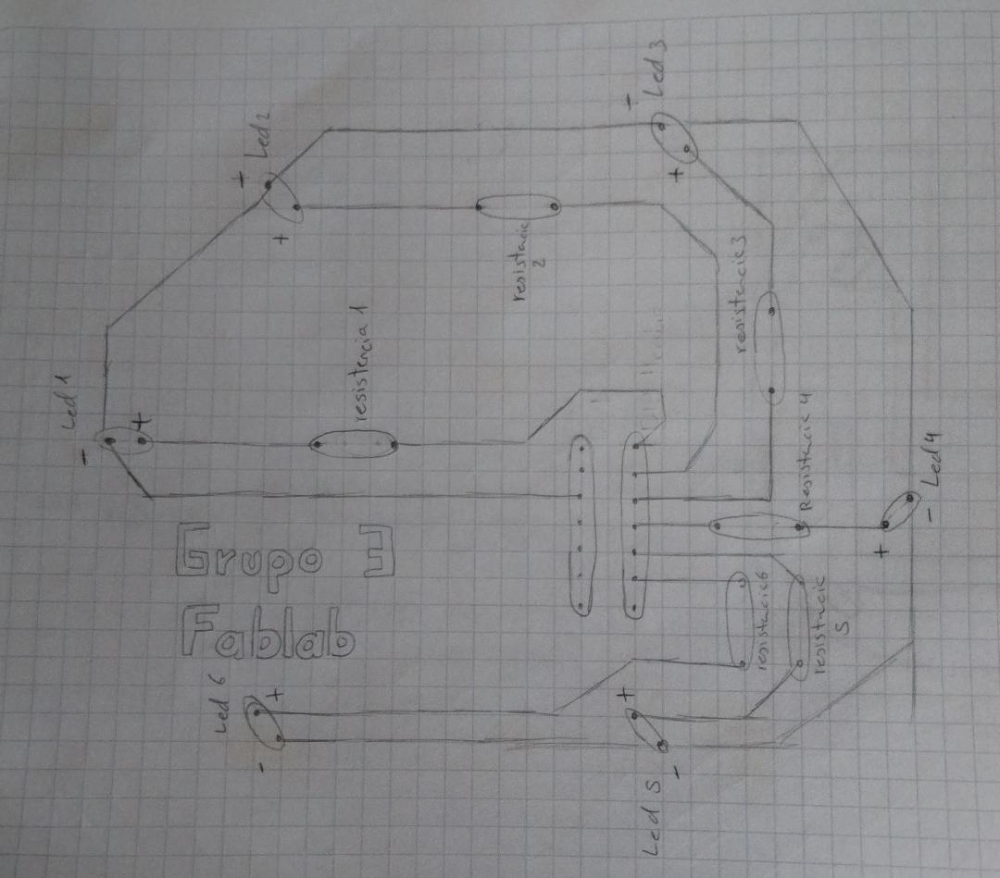
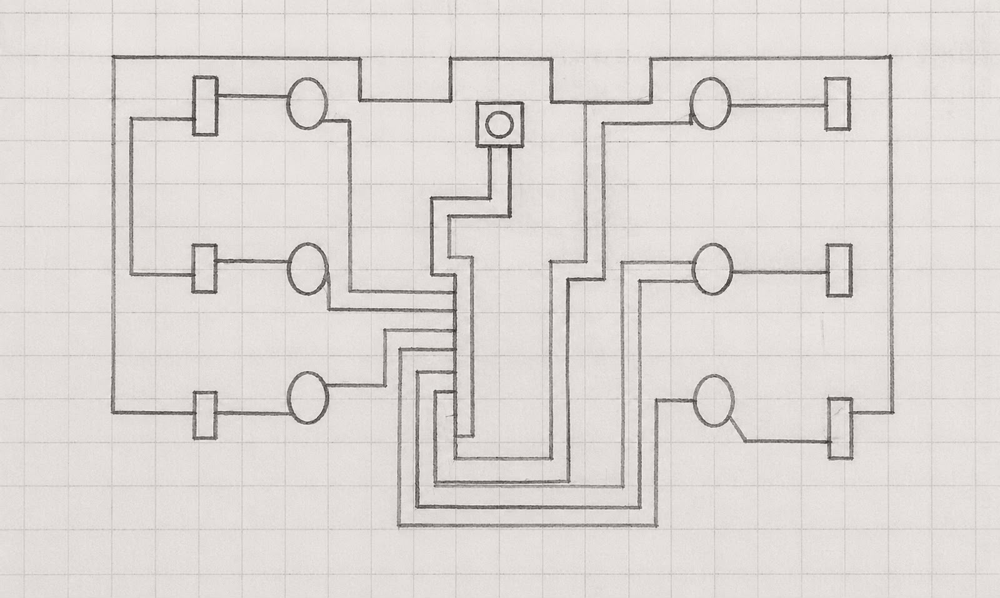
3. Digital Modeling
Once the conceptual design was selected, the butterfly was modeled digitally using CAD software. The objective was to transform the initial sketches into a precise digital model.
Several modifications were made during this stage to improve dimensions, symmetry, and the placement of electronic components. The digital model allowed us to visualize the final appearance of the project before fabrication.
4. Arduino Programming and Simulation
After completing the digital design, the programming stage began. The Arduino code was developed to control the LED sequence and create the desired visual behavior for the butterfly design.
The circuit and code were tested using Wokwi before being implemented on the physical hardware. This simulation allowed us to verify the connections, evaluate the programming logic, and identify possible improvements.
The simulation results confirmed the correct operation of both the circuit and the programmed sequence.
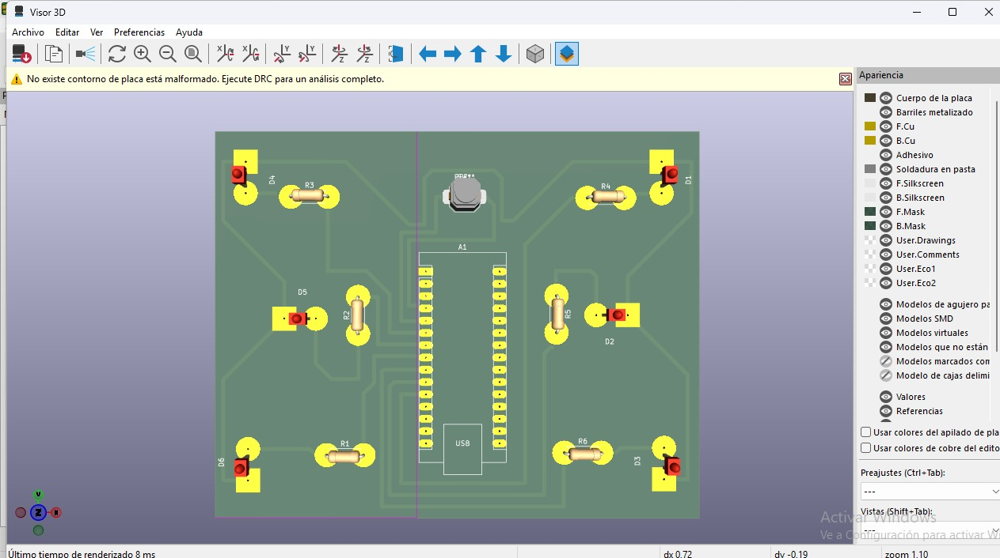
Week 6: Manufacturing Process and Fabrication
The process began with the engraving of the copper board using the fiber laser machine, where the circuit design was marked with high precision.
After engraving, drilling was performed to create the necessary holes for electronic components.
5. Copper Board Engraving and Drilling
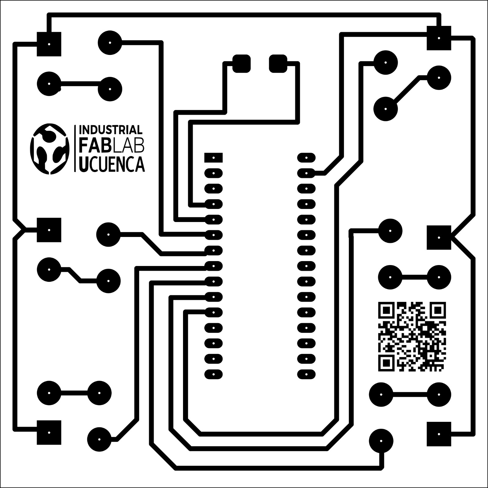
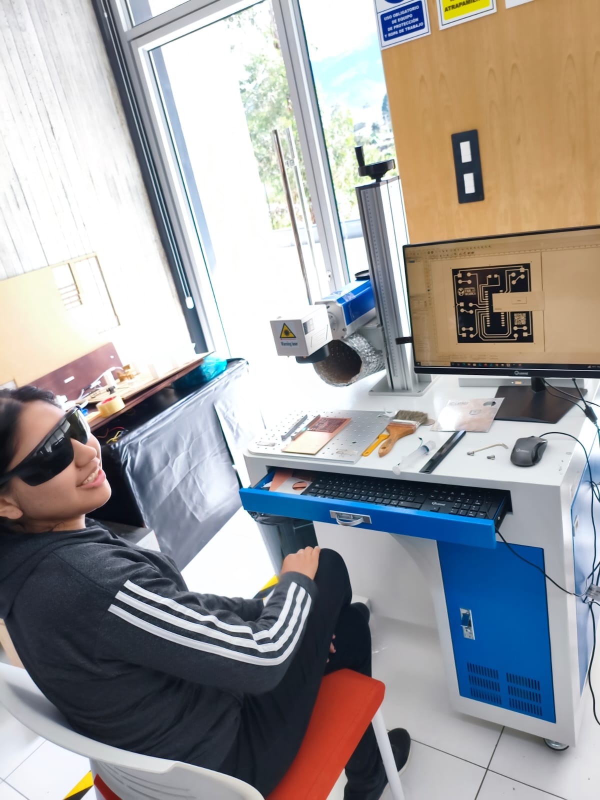
6. Laser Cutting Process
In the laser cutting machine, the copper board was precisely processed according to the design layout.
6. Protective Box Design, 3D Printing and Acrylic Lid Fabrication
After completing the electronic assembly process, the protective box was designed using Fusion 360 to properly house the copper PCB and all electronic components. The model was carefully developed considering internal space, component positioning, and structural stability for the final prototype.
Once the design was finished, the box was manufactured using a Prusa i3 3D printer, allowing the physical structure to be produced with precision and durability. This ensured that the electronic system could be safely integrated inside the enclosure.
In addition, the lid of the box was designed in AutoCAD and later fabricated using a laser cutting machine with acrylic material. Finally, all components, including the copper board, were assembled inside the structure to complete the final housing of the system.
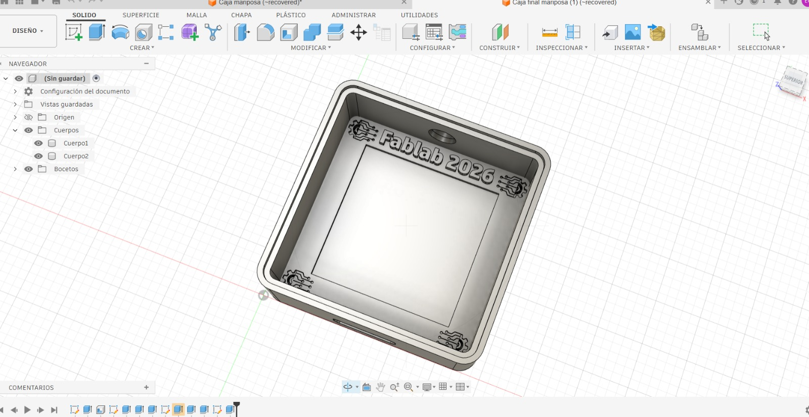
7. Final Integration and Testing
The final stage of the project integrates all the previous processes, including engraving, drilling, laser cutting, and assembly. All these steps come together in a functional prototype that demonstrates the complete development process. The system was tested to verify its correct operation.